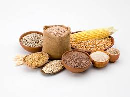

Cereals

What are Cereals?
Cereals are grasses (members of the Poaceae family) cultivated for the edible components of their grain. They are grown in greater quantities and provide more food energy worldwide than any other type of crop; therefore, they are considered staple crops.
The "Big Three"
While there are many types of grains, three species account for the vast majority of global production:
- Maize (Corn): The most produced cereal worldwide, used for human consumption, livestock feed, and industrial products (like ethanol).
- Rice: The primary staple food for more than half of the world's population, particularly in Asia.
- Wheat: The primary cereal of temperate regions, essential for making bread, pasta, and pastries.
Other Important Grains
- Barley: Used for animal feed, health foods, and malting (brewing beer).
- Sorghum & Millets: Highly drought-resistant grains, crucial for food security in arid regions of Africa and Asia.
- Oats: Widely consumed as a breakfast food (porridge) and known for high fiber content.
- Rye: Important in cold climates, used for heavy breads and spirits.
Structure of a Cereal Grain
A whole grain consists of three distinct parts:
- Bran: The multi-layered outer skin containing antioxidants, B vitamins, and fiber.
- Germ: The embryo which has the potential to sprout into a new plant; it contains B vitamins, some protein, minerals, and healthy fats.
- Endosperm: The germ's food supply, which provides essential energy to the young plant. This is the largest portion of the kernel and contains mostly starchy carbohydrates.
Nutritional Profile
Cereals are primarily a source of carbohydrates (energy).
- Whole Grains: Contain all three parts of the grain and are rich in fiber and nutrients.
- Refined Grains: Have the bran and germ removed (like white rice or white flour), which extends shelf life but removes most of the fiber and vitamins.
- Proteins: While grains contain protein, they are often low in the essential amino acid lysine, which is why they are traditionally paired with legumes (like beans and rice) to create a complete protein profile.
Pseudocereals
These are non-grasses that are used in the same way as cereals. Common examples include Quinoa, Buckwheat, and Amaranth. They are popular alternatives because they are naturally gluten-free and often have a higher protein content than true cereals.